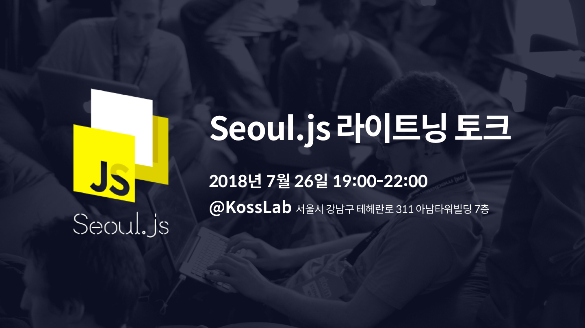

Seoul.js Lightning Talk
이번 Seoul.js 라이트닝 토크는 Javascript에 관심을 갖는 네트워크 중심의 이벤트 입니다.
보통 국내 개발 이벤트는 잘 알려지거나 해당 기술에 깊이있는 사람은 발표만 하고, 대부분의 참가자들은 발표만 듣고 헤어지는 경우가 많다고 느껴집니다.
하지만 진짜 이야기는 이벤트가 끝난 후에 나누는 이야기 속에 더 많았습니다.
 출처: https://www.cultofpedagogy.com/think-pair-share/
출처: https://www.cultofpedagogy.com/think-pair-share/
그래서 어떻게 발표가 끝나고 네트워킹과 추가적인 기술적인 관심사를 나눌 시간과 문화를 조금씩 만들어 볼까 고민하였습니다.
이러한 생각과 취지로 다가오는 Seoul.js 라이트닝 토크에서는 발표자와 청중의 밸런스를 1:2 가 이하가 될 수 있도록 정하고 네트워킹 중심의 이벤트 기획하고, 발표 또한 가볍게 ‘라이트한' 방식으로 준비의 부담을 줄이고 Javascript 에 열정있는 개발자라면 누구나 즐길 수 있고 참여할 수 있는 행사를 준비했습니다.
라이트닝 토크?
발표는 각각 5분 내외로 짧게 진행됩니다. JS 개발에 관한 자신만의 경험담이나 인사이트가 있는 사람이라면, 누구나 부담없이 발표자로 참여할 수 있습니다. 발표자가 많을 수록 지식 공유뿐만 아니라 관심사나 생각, 고민 등을 서로 공유할 수 있다는 점에서 아이스 브레이킹인 것이죠. 발표 세션이 끝나면 다 같이 모여 신나고 재밌게 테크 토크를 하는,
개발자의, 개발자에 의한, 개발자를 위한 진정한 네트워킹 시간!
참가자
참가자는 총 40명으로, 발표자 14명과 청자 26명으로 구성됩니다.
발표 주제는 Javascript와 관련된 것이라면 무엇이든 가능합니다. 프로젝트 경험담이나 삽질을 통해 알게 된 인사이트, 혹은 현재 구상하는 프로젝트 등 Javascript 개발과 관련만 되어있다면 라이트닝 토크 발표자로 모두 참여 가능해요!
참가자로 오신 분들 중에서도 가볍게 공유하고 싶은 내용이 있는 분들은 이후 네트워킹 타임에 따로 시간을 마련할 예정이니 걱정마세요.
발표 가이드라인
- 경험담, 인사이트, 프로젝트 아이디어 등 Javascript에 관한 것이라면 모두 가능 👌
- 5분 내외로 발표를 할 것
- 슬라이드, 발표자료 준비 등에 대한 압박은 Zero. 형식은 자유롭게!
발표 주제 예시
- Node Security Platform, nsp, npm audit
- 왜 나는 Redux를 때려치우고 MobX를 쓰게 되었는가
- 개발자도 신경써주었으면 하는 색에 대한 접근성
- P2P Network with Node.js
- React Native에서의 Code push
행사 일정
- 일시: 2018년 7월 27일 금요일
- 시간: 오후 7:00 - 10:00
- 장소: KossLab 서울시 강남구 테헤란로 311 아남타워빌딩 7층
이벤트 스케쥴
| 시간 | 스케쥴 |
|---|---|
| 19:00 - 19:30 | 등록 |
| 19:30 - 20:15 | 발표 1세션 |
| 20:15 - 20:25 | 인터미션 |
| 20:25 - 21:10 | 발표 2세션 |
| 21:10 - 22:00 | 네트워킹 + 간단한 과자 몇박스 + 음료(캔) |
참가신청
Festa로 신청이 가능합니다.
스폰서
장소후원: KossLab